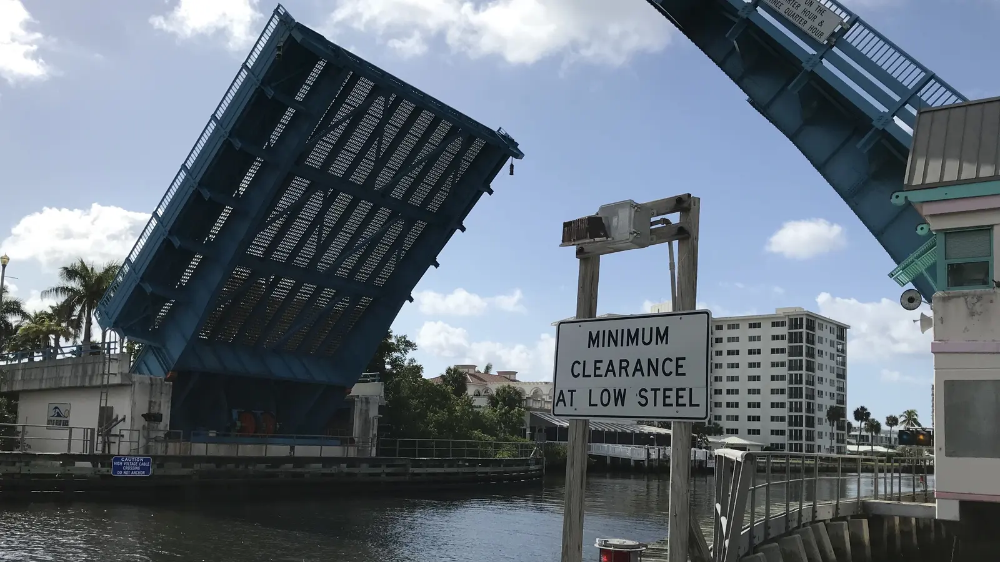

Delray Beach homes for sale run from walkable downtown homes and townhomes near Atlantic Avenue to beach-area properties and large 55+ condo communities to the west. Recent closings put the city's median around $510,000, but a downtown house and a 1970s 55+ condo are completely different markets. Rui Cunha, Broker at Royal Star Corp, works Delray Beach from his office a short drive south in Deerfield Beach.
What it's like to live in Delray Beach
Delray Beach is a Palm Beach County beach city between Boca Raton to the south and Boynton Beach to the north, with the small town of Gulf Stream to the northeast (Wikipedia). Florida's Office of Economic and Demographic Research estimated the population at 69,038 as of April 1, 2025 (Florida EDR).
Downtown Delray runs along Atlantic Avenue, east of I-95 all the way to the beach, and has gone through a large-scale renovation. Just north of Atlantic Avenue is the Pineapple Grove Arts District (Wikipedia). Buyers who want restaurants and the beach within walking or biking distance usually start their search east of I-95.
Neighborhoods and 55+ communities
- Downtown and Pineapple Grove. The most walkable part of the city, around Atlantic Avenue.
- Kings Point in Delray Beach. A 55+ community with about 7,200 homes, generally from under $100K to the $200Ks (55places).
- Palm Greens. About 1,401 age-restricted homes, generally $100Ks to $300Ks (55places).
- Rainberry Bay. About 901 age-restricted homes, generally $200Ks to $500Ks (55places).
55places lists more than 140 age-restricted communities near Delray Beach. Not every community with a Delray Beach mailing address is inside the city limits, so check the property appraiser record for the address you like.
Delray Beach market snapshot
Resideline tracked 926 closings in Delray Beach over the six months to October 3, 2026. The median closing price was $510,000, and homes took a median of 48 days to go under contract (Resideline). About 12% of those closings never appeared on the MLS. Looking only at MLS-listed sales, the median was $540,000.
That's a citywide figure. Beach-area homes and 55+ condos sit at opposite ends of the market, and they don't move together. Prices vary widely by neighborhood, home type and distance to the water, so ask Rui for a current comparison of recent sales before you make an offer.
Practical notes: condos, insurance and flood zones
Older condos. Florida's condo safety rules apply to buildings of three or more stories: a milestone inspection at 30 years, or 25 if the local building department requires it (SB 154, 2023), plus a Structural Integrity Reserve Study and funded reserves (Rimkus). Many of Delray's 55+ communities were built in the 1970s and 1980s. Before you make an offer, ask for the reserve study, budget, inspection status and history of special assessments.
Insurance and flood. Homes near the beach and the Intracoastal sit in higher-risk flood areas. FEMA's newer pricing raised flood premiums most in coastal Broward and Palm Beach, while many inland areas stayed roughly stable (WLRN). Citizens policyholders must carry flood coverage as the requirement phases in through 2027 (News4JAX). Get insurance quotes before you sign, not after.
Property taxes. Delray Beach is in Palm Beach County, so the tax rate differs from Broward cities like Deerfield. A primary residence may qualify for the homestead exemption. Ask a CPA how it applies to you.
Schools
Delray Beach is served by the School District of Palm Beach County. Atlantic High School is at 2455 W. Atlantic Ave. (Palm Beach County Schools). School assignment depends on the exact address, so confirm boundaries with the district and check grades on the Florida Department of Education site.
Getting around
I-95 runs north-south through the city with two interchanges. Tri-Rail commuter trains and Amtrak both stop at Delray Beach station, and Palm Tran runs local buses (Wikipedia). Boca Raton is next door to the south, so many residents work or shop there. Drive your commute at rush hour before you commit.
Working with Rui in Delray Beach
Rui has been in South Florida real estate since 2003, first as a mortgage broker and later as a broker and licensed General Contractor. He can help you buy a home, explain ITIN mortgages if you don't have a Social Security number, or price your place if you want to sell your home. Run numbers with the mortgage calculator, and compare nearby Boca Raton and Boynton Beach.
FAQ
What is the median home price in Delray Beach?
Resideline reported a median closing price of $510,000 for the six months to October 3, 2026, across 926 closings ($540,000 counting only MLS-listed sales). Downtown, beach-area and 55+ homes are very different markets, so look at sales for the type of home you want.
Is downtown Delray Beach walkable?
Downtown runs along Atlantic Avenue from I-95 to the beach, with the Pineapple Grove Arts District just to the north. Buyers who want to walk to restaurants and the beach usually focus east of I-95.
What should I check before buying a 55+ condo in Delray Beach?
Ask for the reserve study, budget, milestone inspection status, special assessment history and the community's approval rules. Many large 55+ communities date from the 1970s and 1980s, and repair costs fall on the owners.
Can I buy in Delray Beach without a Social Security number?
Many buyers use an ITIN mortgage, subject to lender approval. Rui can explain what lenders usually ask for. See our ITIN mortgage guide or contact Rui.
Talk to Rui
Thinking about Delray Beach? Ask Rui for a current price comparison for the streets you like.